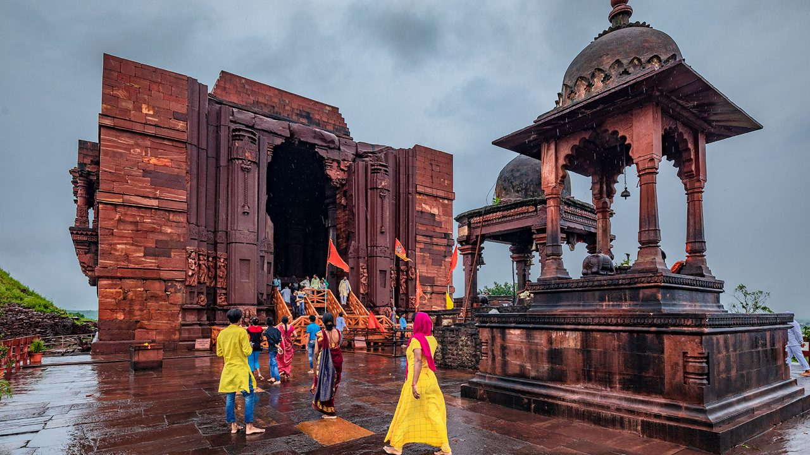
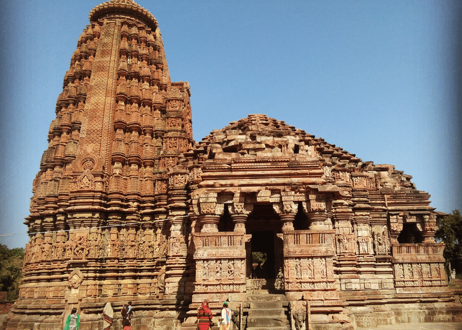
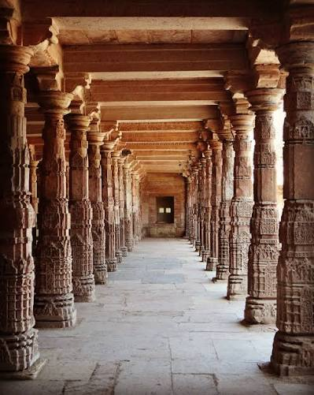

Paramara Dynasty Explorer
Journey to Dhara, the seat of a dynasty ruled not only by warrior-kings but by a philosopher-king. Discover the Paramaras of Malwa — patrons of Sanskrit scholarship, builders of the Bhojeshwar temple, and the rulers who turned a regional capital into one of India's great centres of learning.
A Dynasty of Warrior-Scholars in the Heart of India
The Paramaras rose in the 9th–10th centuries as feudatories of the Rashtrakutas, establishing themselves in the Malwa region of central India with their capital at Dhara (modern Dhar, Madhya Pradesh). Tradition traces the family's name to Paramara, "the slayer of the enemy," born from the sage Vashishtha's fire-pit on Mount Abu.
Independence came under Siyaka II, who defeated the Rashtrakuta king Khottiga around 972 CE and sacked the Rashtrakuta capital Manyakheta. From this foundation, the Paramaras built one of central India's most influential kingdoms — remembered less for the scale of its conquests than for the extraordinary cultural and intellectual flowering it produced under its most celebrated ruler, Raja Bhoja.
📜 The Philosopher-Kings of Dhara
- c. 800s–1305 CE — Nearly five centuries of Paramara rule over Malwa.
- Capital at Dhara — Modern Dhar, Madhya Pradesh, a seat of scholarship and temple-building.
- Agnikula Legend — Traced to a fire-born ancestor at Mount Abu, one of the four Agnivanshi Rajput lines.
- Bhojshala — A renowned Sanskrit college and temple to Goddess Saraswati founded at Dhara.
Major Rulers of the Paramara Line
From the dynasty's founding conquerors to the polymath king whose name is still remembered wherever Sanskrit learning is discussed.
Upendra / Krishnaraja (c. 800s)
The legendary founder of the line, ruling as a Rashtrakuta feudatory and establishing the family's presence in Malwa.
Siyaka II (r. c. 940–972)
Broke free of Rashtrakuta overlordship, defeating Khottiga and sacking Manyakheta around 972 CE to found an independent Paramara kingdom.
Vakpati Munja (r. c. 972–995)
A poet-king and generous patron of Sanskrit literature at Dhara, though ultimately defeated and killed in battle against the Western Chalukya king Tailapa II.
Raja Bhoja (r. c. 1010–1055)
The dynasty's most celebrated ruler — soldier, architect, and polymath credited with treatises on statecraft, medicine, architecture, and poetics, and founder of the Bhojshala and Bhojpur.
Udayaditya (r. c. 1059–1087)
Restored Paramara fortunes after invasions from the Chalukyas and Kalachuris, and built the Udayeshwar temple at Udaypur, Madhya Pradesh.
Mahalakadeva (r. until 1305)
The last significant Paramara king, who fell defending Dhara against the forces of Alauddin Khalji, bringing the dynasty's independent rule to a close.
📚 Hallmarks of Paramara Patronage
- Sanskrit Scholarship: Dhara became a magnet for poets and scholars, rivalling the great learning centres of its age.
- Bhoja's Treatises: Works spanning architecture (Samarangana Sutradhara), medicine (Ayurveda Sarasamgraha), and poetics attributed to Raja Bhoja's court.
- Temple Architecture: The Bhumija style of temple towers, exemplified by the Bhojeshwar and Udayeshwar temples.
- Governance: An administrative model that balanced feudal loyalty with a strong, centrally patronised court culture.
The Dhara Court as a Centre of Sanskrit Learning
Under Munja and, above all, Raja Bhoja, the Paramara court at Dhara became synonymous with scholarship. Bhoja is traditionally credited with authoring or commissioning works across a striking range of subjects — from the art of building (the Samarangana Sutradhara) to statecraft, grammar, and poetics — earning him a reputation as one of India's great polymath rulers.
The Bhojshala at Dhara combined a Sanskrit college with a temple to the goddess Saraswati, patron of learning, embodying the Paramara ideal of kingship joined with scholarship. This same spirit shaped their governance: inscriptions from the period describe an administration that supported temples, agraharas (grants to scholars), and public works such as the great lake at Bhojpur, alongside the routine business of a feudal Rajput state.
Chronology of the Paramara Dynasty
From feudatory beginnings under the Rashtrakutas to the fall of Dhara before the Delhi Sultanate.
Rashtrakuta Feudatories
The early Paramaras govern Malwa as feudatories of the Rashtrakuta empire, laying the foundations of their later kingdom.
Siyaka II's Independence
Siyaka II defeats the Rashtrakuta king Khottiga and sacks Manyakheta, establishing the Paramaras as an independent power.
Munja's Patronage
Vakpati Munja turns Dhara into a hub for poets and scholars before falling in battle against the Western Chalukyas.
The Age of Raja Bhoja
Bhoja founds the Bhojshala at Dhara, builds the Bhojeshwar temple and the great lake at Bhojpur, and presides over the dynasty's cultural zenith.
Udayaditya's Revival
After invasions weaken the kingdom, Udayaditya restores Paramara authority and raises the Udayeshwar temple at Udaypur.
Fall of Dhara
Mahalakadeva, the last significant Paramara king, is defeated by the forces of Alauddin Khalji, ending independent Paramara rule over Malwa.
The Temple Legacy of the Paramaras
A glimpse at the Bhumija-style temple architecture and monuments associated with the Paramara dynasty of Malwa.



📚 References & Further Reading
- Majumdar, Ramesh Chandra (ed.) (1957). The Struggle for Empire (History and Culture of the Indian People, Vol. V). Bharatiya Vidya Bhavan.
- Bhatia, Pratipal (1970). The Paramaras (c. 800–1305 A.D.). Munshiram Manoharlal.
- Sircar, D. C. (1966). Indian Epigraphy. Motilal Banarsidass.
- Archaeological Survey of India. Monument records: Bhojeshwar Temple, Bhojpur and Udayeshwar Temple, Udaypur.
- Willis, Michael (2012). Bhoja and the Geography of Sanskrit Learning. South Asian Studies Journal.